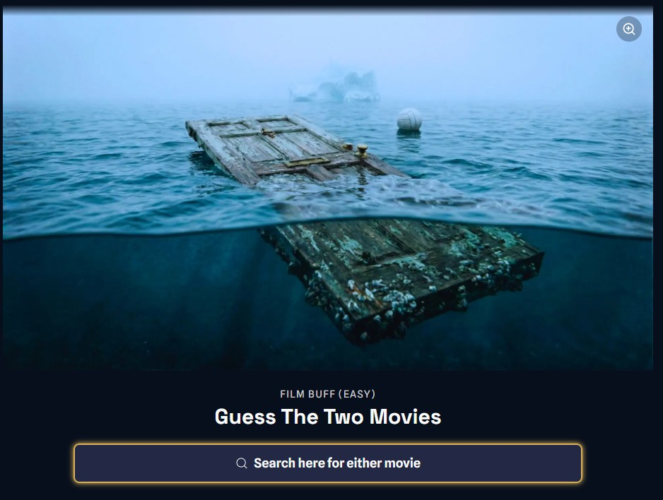

Scene Hunters
FreemiumDecode AI-generated images that blend two movies into one scene
How it worksEach image references characters, locations, and iconic objects from two films in one scene. You identify both movies.
FormatMultiple collections with dozens of scenes. Play at your own pace — not limited to one puzzle per day.
What stands outUnlike any other movie game out there. Each image challenges players to break apart what they're seeing and figure out which two films are hiding in plain sight — creative, tricky, and visually striking.